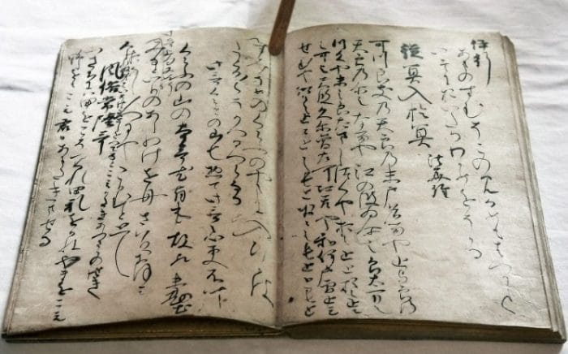

Старояпонский язык
Старояпонский язык (яп. 上古日本語/上代日本語 дзё:ко нихонго / дзё:дай нихонго) — самая древняя из известных форм японского языка.

О том, каким именно был старояпонский язык, до сих пор продолжаются споры, так как ключевые старояпонские тексты не позволяют составить полной картины.
Содержание
Датировка
Периодизация истории японского языка весьма противоречива, имеется несколько версий датировок и способов разделения на периоды[1]. Зачастую на версии влияет политика: принятой верхней временно́й границей (закатом) старояпонского считается 794 год нашей эры[1], когда столицу из Хэйдзё перенесли в Хэйан. Но нижнюю границу чётко определить очень трудно: небольшая часть японской лексики, обычно топонимы и имена, записана в китайских текстах иероглифами по фонетическому принципу («как слышится»), например, в главе «Троецарствия» «Вэй чжи» (魏志, Записи Вэй, 3 век нашей эры). Также периодически археологами извлекаются деревянные таблички с надписями. Тем не менее обычно границу устанавливают на 712 год нашей эры по практическим соображениям: в 712 году закончен Кодзики, древнейший письменный памятник достаточной длины. 712 год — это начало периода Нара (710—794). Более формальная методология часто датирует старояпонский нечётко: «по 794 год», не указывая начала. Источники кроме «Кодзики» — это Фудоки (720 год), Нихон сёки (720 год), Манъёсю (около 759 года).
Письменность

Японские слова впервые стали записывать с помощью китайских иероглифов уже во второй половине пятого века нашей эры (Инарияма Кофун, часть периода Кофун). Тем не менее самые ранние японские тексты написаны на вэньяне, хотя их можно читать по-японски с помощью камбуна. Некоторые из этих китаеязычных текстов обнаруживают влияние японской грамматики, например, иногда сказуемое ставится после прямого дополнения, как в японском, а не перед ним (как в вэньяне). В подобных текстах японские частицы могут записываться китайскими иероглифами фонетически.
Со временем фонетическое использование кандзи набирало всё бо́льшую популярность, в конце концов породив манъёгану. В Кодзики манъёганой уже записывали личные имена и топонимы, а в тексте Манъёсю она занимает значительное место.
С другой стороны, китайские иероглифы начинают использовать семантически, для обозначения японских слов, связанных с китайскими по смыслу, а не по звучанию. Например, знаком кит. 谷, пиньинь gǔ, палл. гу, буквально: «долина» начали записывать японское слово тани (яп. たに, «долина»). Позже с помощью китайских иероглифов стали записываться как слова с примерно похожим звучанием, так и слова с похожим значением. Например, с помощью 谷 записывали слово дани (яп. だに, «как минимум», «во всяком случае»).
Пример из Манъёсю:
夢尓谷 不見在之物乎
юмэ ни дани/ мидзу ариси моно о
«То, чего не увидеть даже во сне».
- Юмэ (яп. , мечта, сон) записана иероглифом 夢 (по-китайски читается мэн) по смыслу, частицы ни, си и о записаны соответственно иероглифами 尓, 之 и 乎 фонетически, слово дани — иероглифом 谷 (семантически, через слово тани, имеющее тот же смысл, который был у иероглифа в китайском).
- Отрицание мидзу (ми — смотреть; дзу — отрицательная частица) записано 不見 (кит. 不 не + 見 смотреть).
- Более изощрённые примеры семантической записи — запись 9 × 9 (яп. くく куку) с помощью иероглифов 八十一 («81»), (яп. しし сиси, 4 × 4, а также 獣 — зверь) с помощью иероглифов 十六 («16»).
Ограничения, накладываемые письменностью
Использование кандзи для письма наложило некоторые ограничения.
- Только один плавный согласный: /l/.
- Ограничения в записи закрытых слогов.
Среднекитайский язык позволял слогу заканчиваться звуками /p/, /t/, /k/, /m/, /n/ и /ŋ/. Древнекитайский язык обладал бо́льшим количеством закрытых слогов (некоторые реконструкции, например авторства Ли Фангуя и Акиясу Тодо, совершенно исключают открытые слоги).
Старояпонский, судя по всему, обладал закрытыми слогами: имеются свидетельства попыток их записи. Например, со2 и чередующийся с ним слог са, бывший связующей частицей (係助詞), записываются 曽 (*/tsǝŋ/) и 左 (*/tsar/), что предполагает наличие в конце слога согласного звука. (С этимологической точки зрения они считаются указательными местоимениями, как со2рэ и сару[2]).
Другой пример, указывающий на возможность существования закрытых слогов — слово 原 (в значении «равнина, поле») на литературном языке читается «хара» (под воздействием рэндаку — «бара» или «вара»), но на юго-востоке страны слово читается «пару». Слова вроде «хараппа» считаются следствием удвоения: пар(ар)пар, таким образом, можно предположить, что в протояпонском могло существовать сочетание фонем */par/ или */pal/.
Китайцы, говорившие на древнекитайском, слышали и записывали протояпонский. Имя одной из властительниц древней Японии они записали на слух иероглифами 卑弥呼 */pieg miěr hag/.
Слово кана (仮名) произошло от кари-на (заимствованное имя/заимствованный знак) → карна → канна → кана.
Кодзики различает шаншэн (яп. 上声 дзё:сё:, дзё:сэй, нисходяще-восходящий тон в китайском языке) и цюйшэн (яп. 去声 кёсё:, кёсэй, падающий тон). Это видно по тому, как японцы записывали долгие и краткие гласные, а также по высоте гласных (мелодическому ударению).
Фонетика
При реконструкции фонетики старояпонского языка исследователи опирались на данные сравнительной лингвистики: анализ синхронных текстов на среднекитайском языке, исследования фонетических изменений, происходивших в японском, сравнительный анализ рюкюских языков. Хотя бо́льшая часть японских древних текстов создана на языке придворных в Асуке и Наре, в центральной Японии, создатели Манъёсю использовали южные и восточные диалекты.
Старояпонский значительно отличался от более поздних стадий развития языка. Анализ манъёганы и дзёдай токусю канадзукай позволил реконструировать фонетику.
Транскрипции старояпонского имеются в Кодзики, Нихон сёки, Манъёсю. Однако, если в Кодзики различаются слоги /мо1/ и /мо2/, то в двух последних трактатах — нет. Кодзики составлялась раньше Нихон сёки и Манъёсю, поэтому в ней отражено произношение, которое позднее устарело.
Другие отличия старояпонского от современного языка:
- отсутствие дифтонгов и долгих гласных;
- началом слова не может быть /r/ или звонкий взрыв;
- возможно — отсутствие закрытых слогов (спорно).
Некоторые исследователи считают, что старояпонский может быть родственным неким исчезнувшим языкам с корейского полуострова, в частности, когурёским, но генетические связи японского с какими-либо из существующих языков, кроме рюкюских, остаются гипотетическими. См. также Японо-рюкюские языки#Классификация.
Слоги
Старояпонский имел около 88 слогов.
Сокуон (яп. 促音, удвоение согласных), показанный здесь знаком /Q/, и хацуон (яп. 撥音, конечнослоговый «н», образующий отдельную мору) не существовали или не записывались. Тем не менее, в 奈能利曽-奈能僧 (762 год нашей эры) читалось нано2ссо2, 意芝沙加-於佐箇 (720 нашей эры) и бокун (傍訓) オムサカ в середине Хэйана предполагал чтение о2ссака или о2нсака.
Ни сокуон ни хацуон ещё не создавали новых мор.
Вскоре после создания Кодзики различия между мо1 и мо2 нивелировались, слогов стало 87.
Существует несколько гипотез для объяснения дублей слогов:
- система гласных с восемью гласными звуками;
- система гласных с шестью гласными звуками;
- палатализация начального согласного.
Транскрипции
Следует иметь в виду, что системы транскрипции не отражают всех гипотез о фонетике старояпонского, а также что подстрочные знаки могут относиться как к гласному, так и к согласному звуку.
Существует несколько систем транскрипции. Одна помещает диерезис над гласным: ï, ë, ö (i2, e2, o2). Эта система имеет следующие недостатки:
- она даёт основания предполагать определённое произношение гласных;
- она не позволяет указать неявное отличие в произношении между гласными типов 1 и 2: /то/ в /тору/ и в /кадитори/.
Другая система предполагает использование подстрочных знаков.
Гласные
Чередование гласных
- /а/ ↔ /о2/ (не алломорфное)
- /и1/ ↔ /у/
Согласные
В старояпонском, согласно реконструкциям, существовали следующие согласные звуки.
Шумные согласные
Глухие шумные согласные /p, t, s, k/ соотносились со звонкими преназализованными звуками. Преназализация сохранилась до средневекового японского, а в северных диалектах сохраняется по сей день.
Глухие губные шумные
Звук /h/ современного японского языка в старояпонском реализовывался как [p]. Этот вывод был сделан лингвистами на основе следующего анализа.
Современный звук /h/ не соотносится со своей звонкой парой при присвоении дакутэна:
- か (яп. ка) + ゛ = が (яп. га),
- た (яп. та) + ゛ = だ (яп. да),
- さ (яп. са) + ゛ = ざ (яп. дза),
- は (яп. ха) + ゛ = ば (яп. ба)
Глухая пара к звуку /b/ — /p/.
- Сравнение с рюкюскими языками показывает звук [p] в тех словах, где литературный японский имеет [h]. До того, как японский отделился от рюкюских, эти звуки должны были произноситься одинаково.
- Современный звук /h/ превращается в [ɸ], если за ним стоит /u/: ряд каны «х» (яп. は ひ ふ へ ほ ха, хи, фу, хэ, хо). Португальские миссионеры были в Японии уже в начале XVII века, они записывали весь этот ряд каны через f: «fa, fi, fu, fe, fo». Корейцы, посещавщие Японию в то же время, предположили, что в начале этих слогов стоял глухой губно-губной фрикативный согласный, то есть [ɸ].
- В 842 монах Эннин писал в Дзайтоки, что санскритский звук /p/ более губной, чем японский. Это служит свидетельством того, что к IX веку звук уже произносился ближе к [ɸ], чем к [p].
Глухие корональные шумные
- синхронные аллофоны
- /s/ = [s, ʃ, t͡ʃ, t͡s, c] на западе
- /t/ как /ts/ = [t, t͡s, c] на востоке
- диахронные аллофоны
- /s/ = [t͡s] > [t͡ʃ] > [ʃ] > [s]
Аппроксиманты и одноударные согласные
- диахронные алломорфы
- /ju/ > /ru/
- синхронные алломорфы
- /wo/ = /pa/
Фонетические разрешения
В 1934 году Хидэё Арисака (яп. 有坂秀世 арисака хидэё) и Тэйдзо Икэгами (яп. 池上禎造 икэгами тэйдзо:) независимо друг от друга предложили по набору фонетических разрешений для отдельной старояпонской морфемы. Они известны под названием «законов Арисаки-Икэгами».
- В корне слова: -o1 и -o2 не встречаются вместе.
- В двусложных словах: -u и -o2 обычно не встречаются вместе.
- Существует тенденция: -a и -o1 вместе встречаются чаще, а -a и -o2 — реже.
Правила предполагают разделение гласных на две группы: /-a, -u, -o1/ и /o2/. Гласные из разных групп не смешиваются в одном слове; -i1 и -i2 могут встречаться с гласными из любой группы. Это может быть свидетельством наличия в старояпонском гармонии гласных, как в алтайских языках.
Структура слога
В старояпонском были позволены только слоги CV (согласный-гласный). Слог, начинающийся с гласного, может находиться только в начале слова. Звук /r/ не встречался в начале исконных (не заимствованных) слов. Слог не мог начинаться со звонких взрывных согласных.
Во избежание стечения гласных происходит их элизия:
- второй гласный теряется: /hanare/ + /iso1/ → /hanareso1/;
- первый гласный теряется: /ara/ + /umi1/ → /arumi1/
- два долгих гласных сливаются в один: i1 + a → e1, a + i1 → e2, o2 + i1 → i2, u + i1 → i2 и, возможно, a + u → o1, u + a → o1;
- между гласными помещается /s/: /haru/ + /ame2/→/harusame2/ (воозможно, /ame2/ когда-то звучало как */same2/).